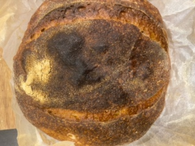

Don't be fooled into thinking sourdough is difficult to make. It is a collection of 3 simple ingredients that it!. I am here to teach you that you too can cook the perfect loaf of bread, learn to nuture your own family of yeast and impress that special someone.
Have a look at this!

Ingredients
Flour
Water
Salt
Calculate when to start feeding your starter to have your bread readey
under construction
Directions
Feed your starter the night before, then feed it again in 12 hours and one last time in anothe 12 hours
Start auto-lyse
Pinch in starter and salt
Need the dough
Do folds every hour for at least 4 hours
Shape your loaf
Let it go through its second fermentation for at least an hour
Put in fridge for up to a day
Bake in dutch oven
Reviews
If you made this recipe please feel free to send me some feedback and a ill add your comment here or even tweak the recipe to make it even better